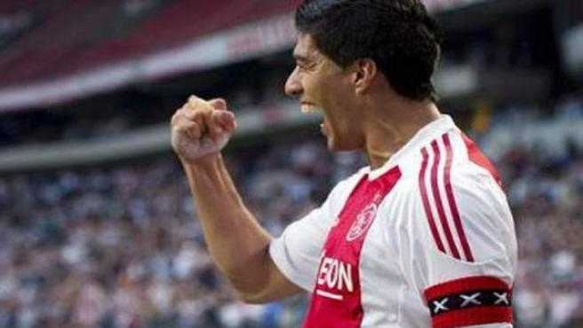
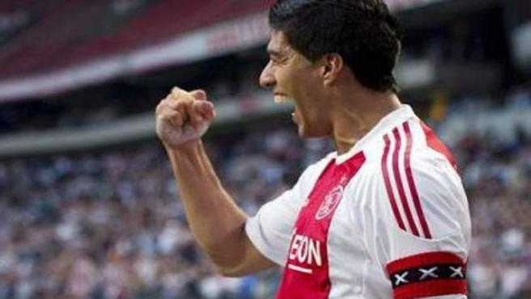

Uruguayo: el nacimiento del Goleador Historico
Luis Suarez nacio el 24 de enero de 1987 en Salto, Uruguay. Desde chiquito, en su ciudad natal, se empezo a notar su gran potencial y ganas de crecer en el mundo del futbol. Se lo apodaba como el Salta o Cheo, a poca edad se mudo a la capital, Montevideo, para comenzar su carrera en el club mas grande de Uruguay, el Club Nacional de Football.

Primeros Pasos
Empezo su carrera en el Bolso en la etapa de baby futbol, debutando en primera como profesional, el 3 de mayo de 2005, jugando Copa Libertadores de America. Su primer gol oficial, fue el 10 de setiembre del 2005. Rapidamente se convirtio en jugador titular del equipo, marcando muchos goles y logrando dos campeonatos uruguayos.
Sus Goles en distintos paises
| Equipo | Pais | Goles |
|---|---|---|
| Nacional | Uruguay | 12 |
| Ajax | Holanda | 111 |
| Liverpool | Inglaterra | 82 |
| Barcelona | Espana | 198 |
| Atletico Madrid | Espana | 34 |
GALERIA


 

Con la seleccion uruguaya lleva marcados 68 goles (43 oficiales), siendo el goleador historico de Uruguay